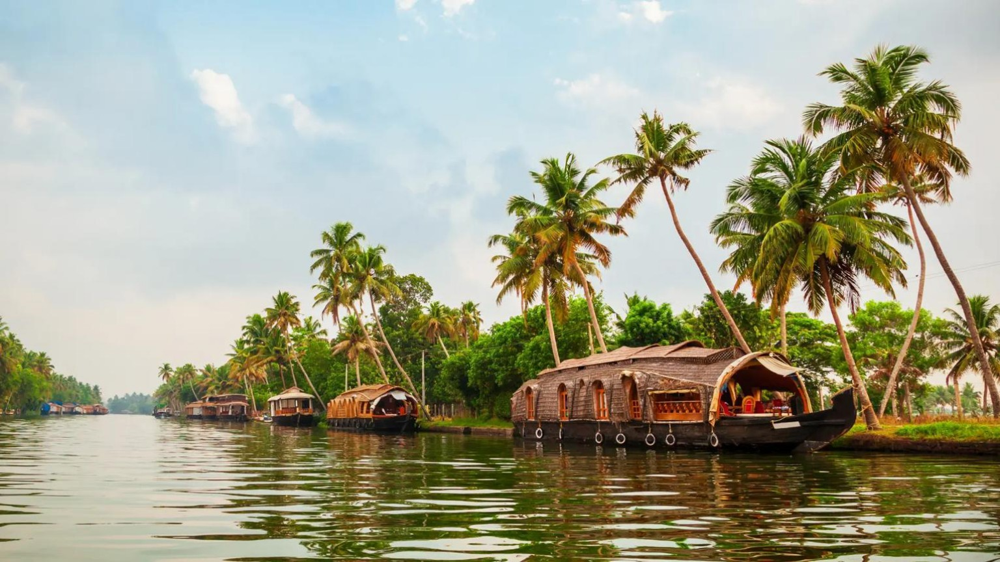
Destinations / ടൂറിസ്റ്റ് സ്ഥലങ്ങൾ
Open a destination page to see places and descriptions. ഓരോ പേജിലും സ്ഥലവിവരണങ്ങൾ കാണാം.
കേരളം, തമിഴ്നാട്, സിയാറത്ത് & ഗ്രൂപ്പ് യാത്രകൾ
ഓരോ വിഭാഗത്തിനും പ്രത്യേക പേജ്. ചിത്രങ്ങൾ ഇന്റർനെറ്റിൽ നിന്ന് ലോഡ് ചെയ്യുന്നു; സ്ഥലത്തിന്റെ സ്വന്തം ഫോട്ടോകൾ പിന്നീട് ചേർക്കാം.


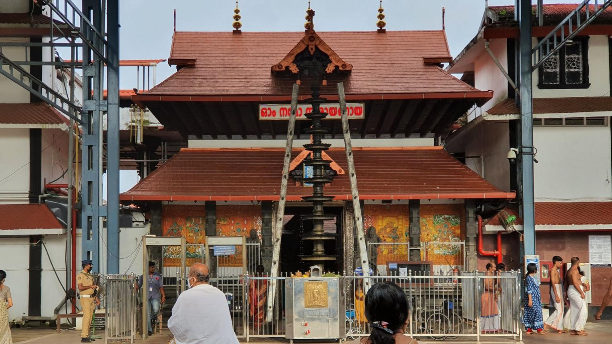
വയനാട് / Wayanad
പച്ചമലകൾ, വെള്ളച്ചാട്ടങ്ങൾ, തടാകങ്ങൾ, തേയിലത്തോട്ടങ്ങൾ എന്നിവ ആസ്വദിക്കാം.
കൂടുതൽ അറിയുക ↗
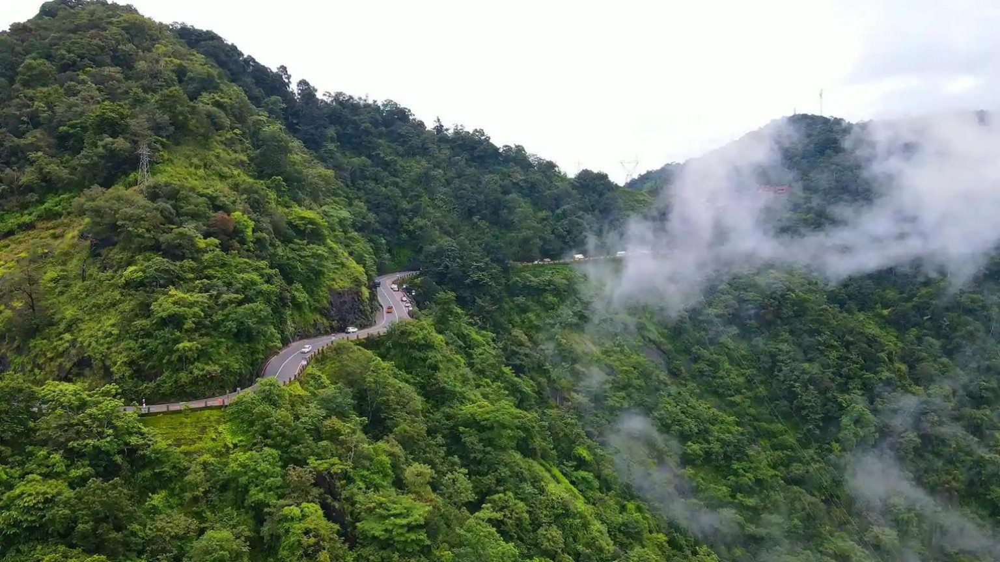

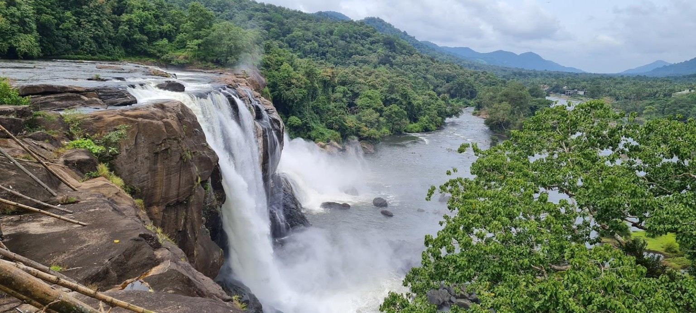

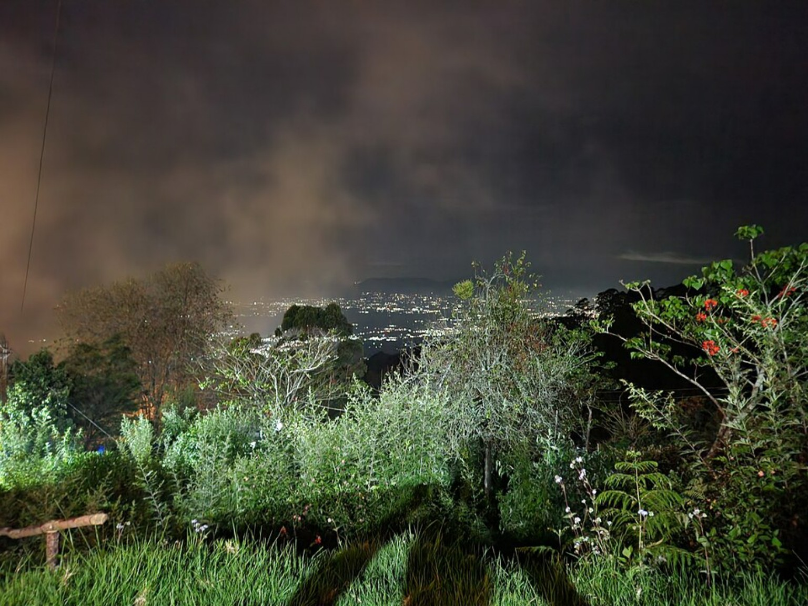
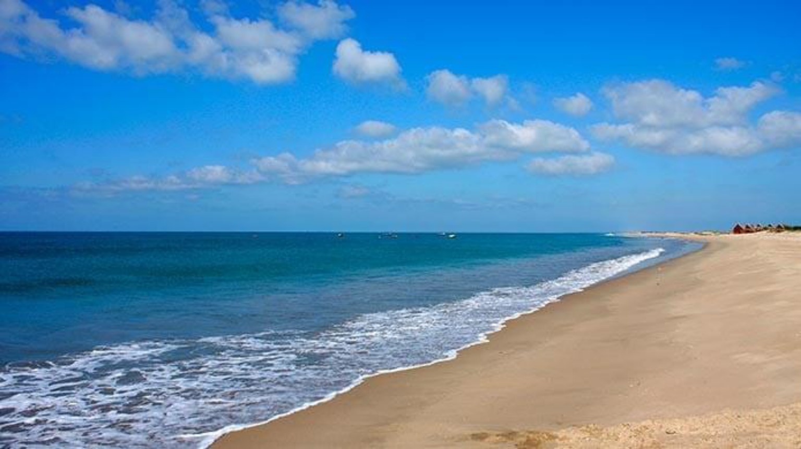
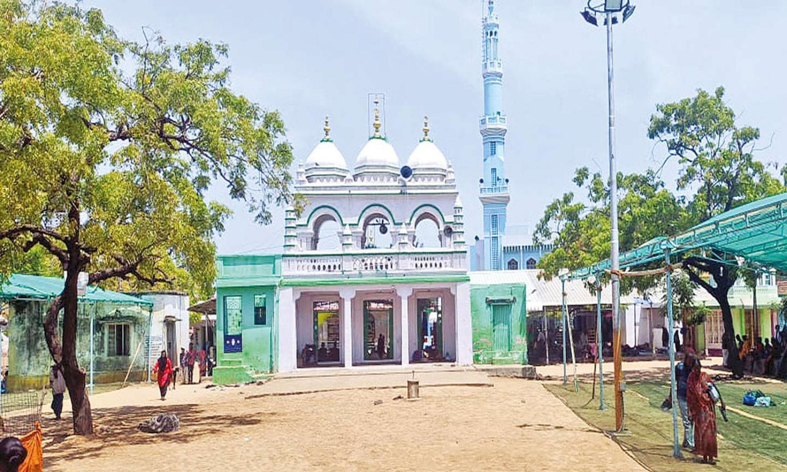

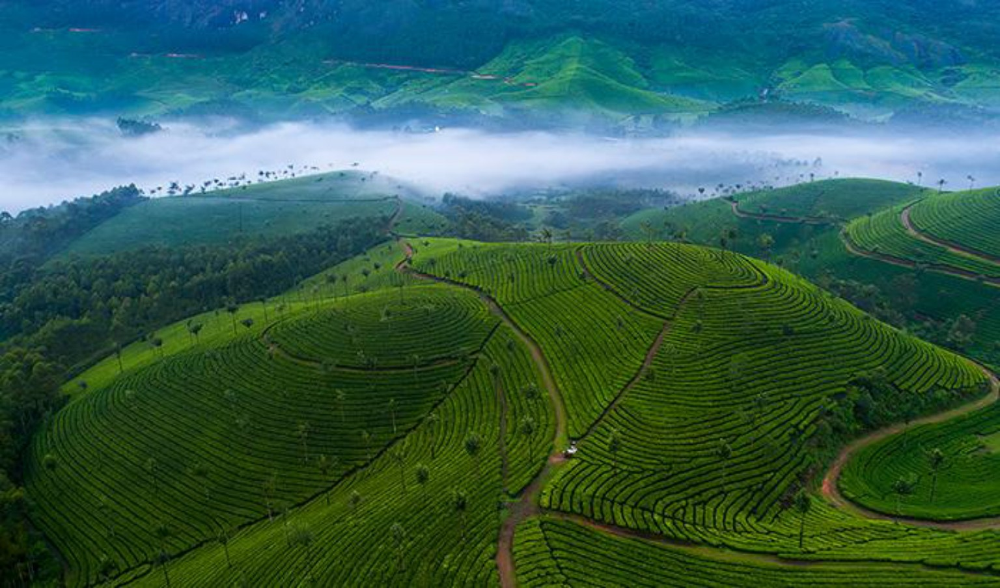
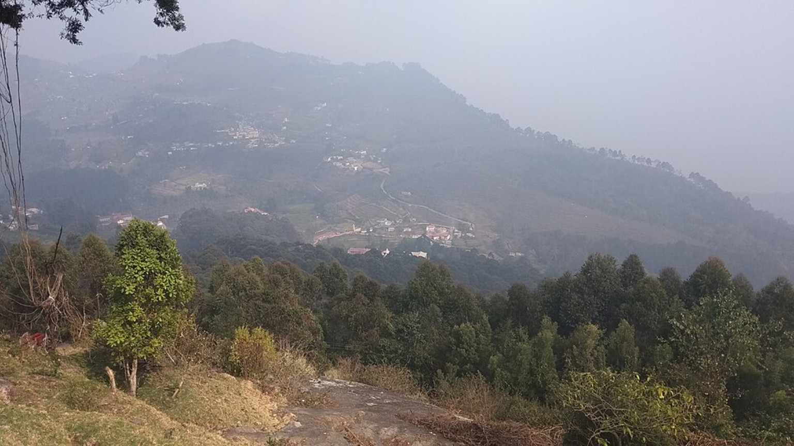

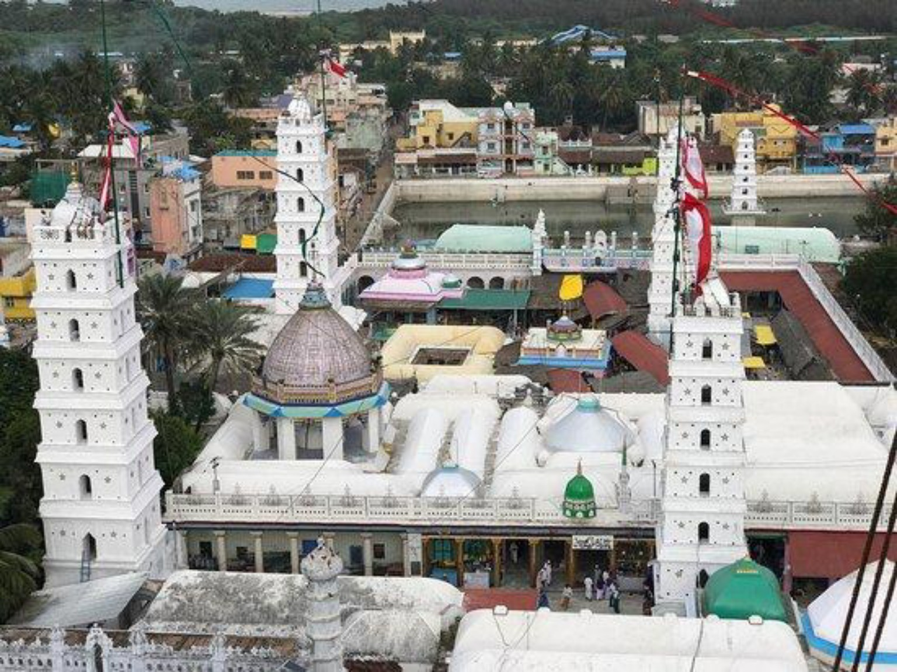
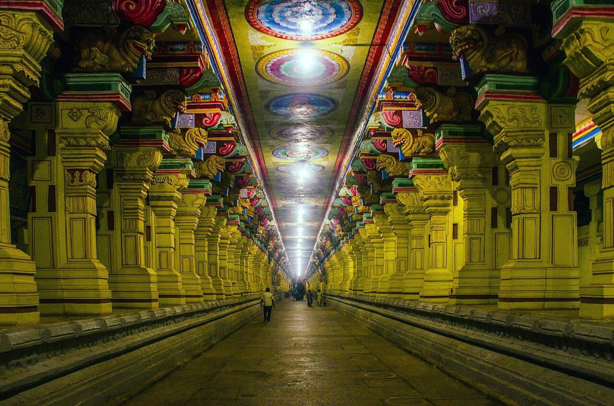
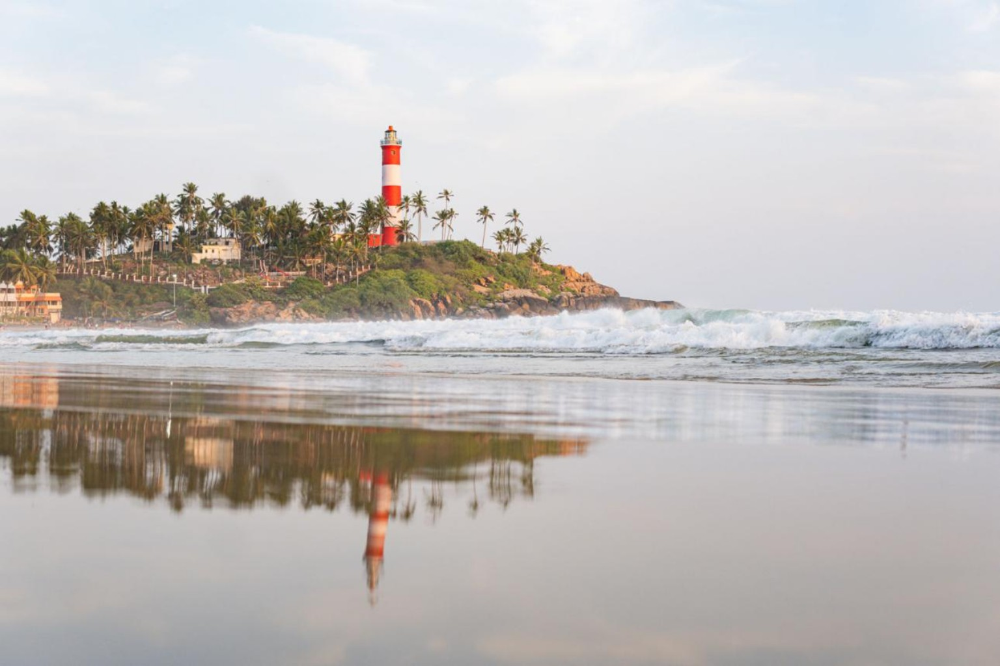
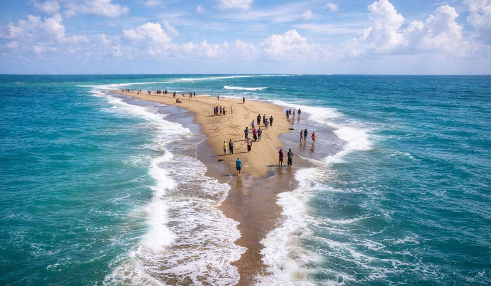

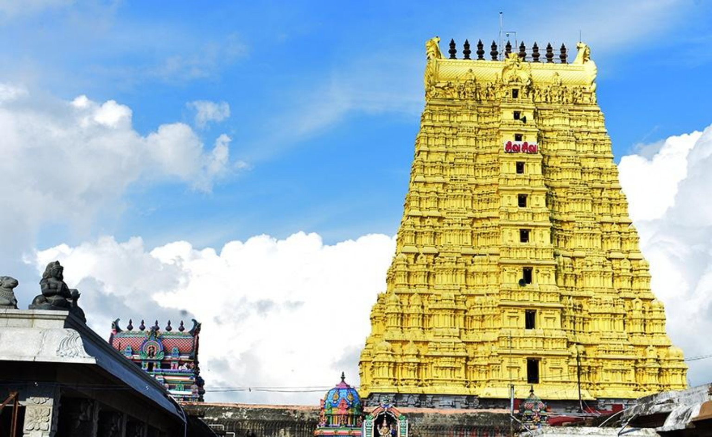


മുത്തുപ്പേട്ട / Muthupettai
തമിഴ്നാട്ടിലെ പ്രധാന സിയാറത്ത് കേന്ദ്രങ്ങളിലേക്കുള്ള യാത്ര.
കൂടുതൽ അറിയുക ↗ഇഷ്ടപ്പെട്ട സ്ഥലം കണ്ടെത്തിയോ?
നിങ്ങളുടെ യാത്രയുടെ വിവരങ്ങൾ ബുക്കിംഗ് ഫോമിൽ നൽകൂ.
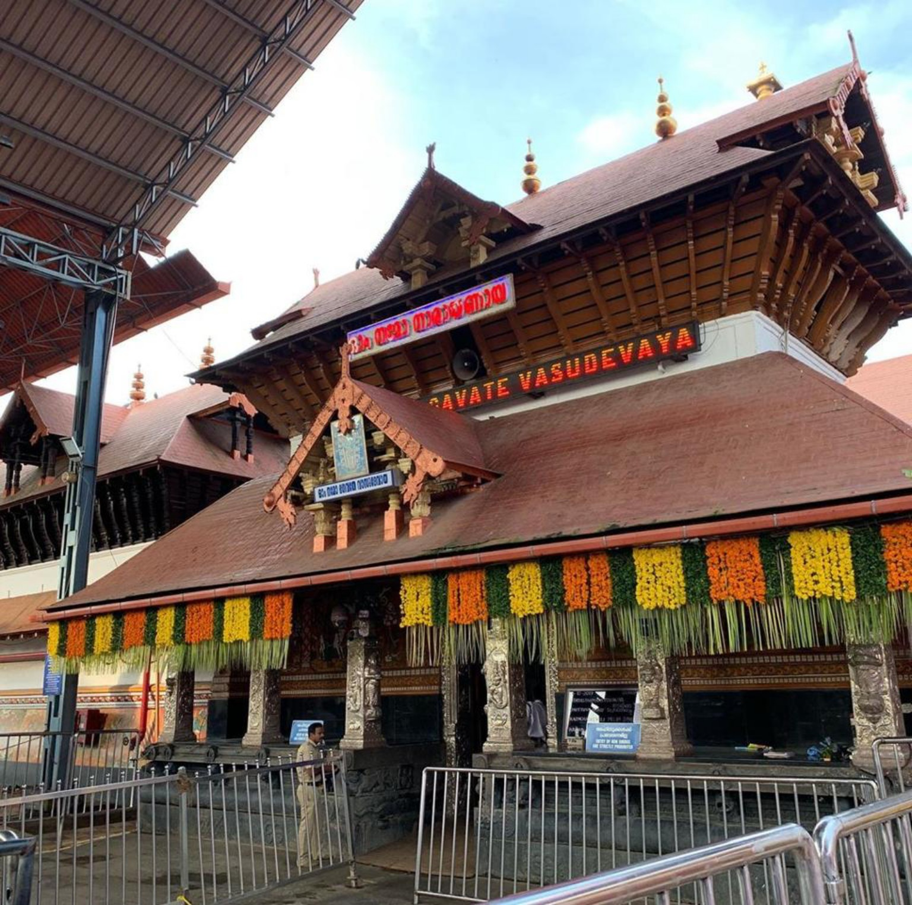
Guruvayur / ഗുരുവായൂർ
കൂടുതൽ സിയാറത്ത് കേന്ദ്രങ്ങൾ
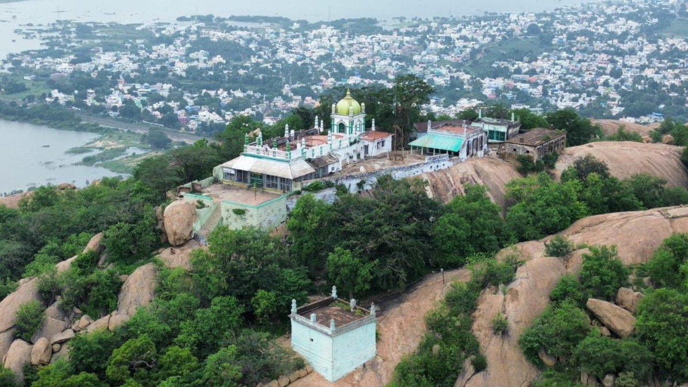
സിക്കന്ദർ മല ദർഗ
ആത്മീയ യാത്ര മിൻഹാ ഹോളിഡേയ്സിനൊപ്പം